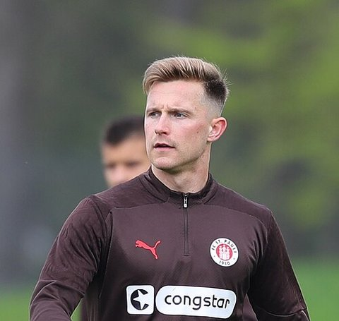
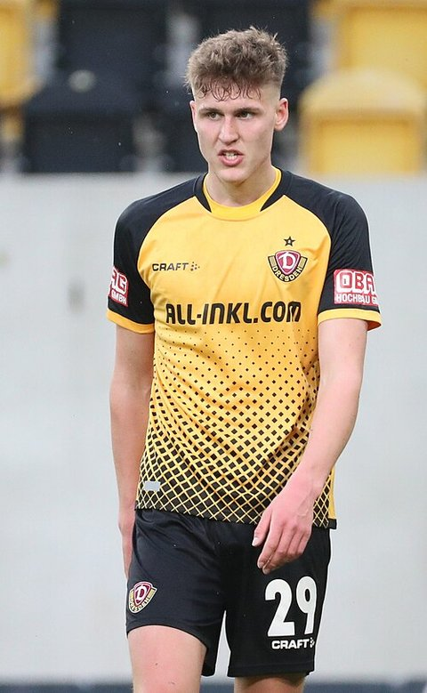

League tier of German-eligible players in 2024/25 and 2025/26
36 moved up a tier and 27 moved down between 2024/25 and 2025/26; the top-9 leagues held 49 players, from 40.
How to read it: the left column is last season’s rung for every player in the pool, the right column this season’s; each ribbon is the players who went from one to the other, its width their number. Green ribbons climb, orange come down, teal are new to the pool, grey are no longer in a covered league. Hover a ribbon for the names.
Bundesliga
127→122
222 012 → 195 190 minutes
stepping-stone league
208→195
330 707 → 307 946 minutes
top-9 league
40→49
64 804 → 80 744 minutes
other covered league
32→42
54 067 → 71 383 minutes
Players of the pool in each tier, 2024/25 → 2025/26, with the minutes they played there: 407 players last season, 408 this season, outfield players with at least 450 minutes, one row per player (the destinations page counts one row per position group, so a player with two positions counts twice there).
Moved up a tier 36
Nicolo TresoldiGER-2. Bundesliga → BEL-Pro League
Philipp HofmannGER-Bundesliga → GER-2. Bundesliga
Philipp ZiereisAUT-Bundesliga → GER-2. Bundesliga
Maximilian WittekGER-Bundesliga → GER-2. Bundesliga
Florian WirtzGER-Bundesliga → ENG-Premier League
Anton StachGER-Bundesliga → ENG-Premier League
and 30 more
Moved down a tier 27
Robin FellhauerGER-2. Bundesliga → GER-Bundesliga
Tom GaalGER-2. Bundesliga → SUI-Super League
Noah GanausGER-2. Bundesliga → DEN-Superliga
Eric MartelGER-2. Bundesliga → GER-Bundesliga
Yannik EngelhardtITA-Serie A → GER-Bundesliga
Amara CondeNED-Eredivisie → GER-2. Bundesliga
and 21 more
New to the pool 114
Jeremy ToljanESP-La Liga
Soufiane El-FaouziGER-2. Bundesliga
Oliver SteurerAUT-Bundesliga
Lauren UlrichGER-2. Bundesliga
Mika BaurGER-2. Bundesliga
Gabriel IsikPOL-Ekstraklasa
and 108 more
No longer in a covered league 113
Phil NeumannGER-2. Bundesliga
Elias BaumGER-2. Bundesliga
Julian WeiglGER-Bundesliga
Mitchell WeiserGER-Bundesliga
Caspar JanderGER-2. Bundesliga
Tim KleindienstGER-Bundesliga
and 107 more
“No longer in a covered league” means exactly that: retired, injured for the season, or playing in a league this report does not fetch. The data cannot tell those apart and this page does not guess. “New to the pool” likewise mixes debutants with players returning from leagues outside the set.
How we know
As an analytics question In numbers: every German-eligible player with at least 450 minutes in 2024/25 or 2025/26, placed on the pathway’s tier ladder in each season, and the move between the two.
What we did We took each player’s main league last season and this season, sorted the leagues into the four tiers the atlas uses everywhere — home league, other covered league, stepping stone (the German second tier), top nine — and counted who moved up, who moved down, who appeared and who is no longer in any league we can see.
Sources Season feature tables for both seasons; a player’s league is the one he played most minutes in; 450-minute floor in a season to count as present in it; rungs as defined in the pathways chapter.
What this means
Between the two seasons 36 players moved up a tier, 27 moved down, 114 are new to the pool and 113 are no longer in a covered league. These are counts of one season-to-season change; without earlier seasons there is no baseline for how many moves a typical year shows, so the balance of ups and downs is not a trend.
What this does not show
Why a player moved, whether a move down was a loan or an injury, and players outside the covered leagues.
Data snapshot: FBref tables fetched 14 September 2026, snapshot commit 7cbfe45 · code: src/season_changes.py · status: exploratory, not pre-registered · all limitations
Explore the data
Trajectories
Trajectories 2024/25 → 2025/26 (German-eligible, ≥ 900 minutes in both seasons)
Season-over-season change in goals + assists per 90, league-adjusted. A move counts as up or down beyond ± 0.05; for scale, the standard deviation of this one-season change across the 178 German-eligible players with both seasons is 0.07. Everything inside the band is listed as stable.
Forwards — 22 players: 5 up, 7 stable, 10 down
Moving up · G+A / 90 adj.
Player
League
Min 2024/25 / 2025/26
Change
NTNicolo Tresoldi
BEL-Pro League
2142 / 2488
+0.244
DUDeniz Undav
GER-Bundesliga
1726 / 2241
+0.238
FSFabian Schleusener
GER-2. Bundesliga
2164 / 2077
+0.106
RARagnar Ache
GER-Bundesliga
2038 / 1718
+0.083
NFNoel Futkeu
GER-2. Bundesliga
2215 / 2705
+0.064
Moving down · G+A / 90 adj.
Player
League
Min 2024/25 / 2025/26
Change
LHLucas Höler
GER-Bundesliga
1867 / 2037
−0.171

JEJohannes Eggestein
AUT-Bundesliga
1853 / 2324
−0.170

PHPhil Harres
GER-2. Bundesliga
1544 / 2204
−0.160
AGAdriano Grimaldi
GER-2. Bundesliga
1099 / 903
−0.152
JNJustin Njinmah
GER-Bundesliga
952 / 1947
−0.136
Midfielders — 76 players: 14 up, 47 stable, 15 down
 Fabian Schleusener
Fabian Schleusener Leroy Sané
Leroy Sané Malick Thiaw
Malick Thiaw